Race Overlay
An iRacing overlay for endurance and multi-class racing: seven draggable panels, a wheel-driven black box, and a team-sync layer that lets a crew chief watch — and adjust — the car they are not sitting in.
Every screenshot on this page is rendered by the overlay itself from a fixed demo snapshot, so what is shown is exactly what the code draws.
What this is
A single always-on-top window covering the screen, drawing panels over iRacing and passing every click through to the sim except where a panel actually is.
- Four panels, each independently positioned, scaled and switched off: Relative, Standings, Radar Bars and Faster Class.
- A black box sharing the Relative's frame — six pages walked with wheel buttons, with real pit service control (fuel, tyres, pressures, tearoff, fast repair).
- Estimates are labelled and honest. Anything projected says so, and anything the sim has not published is left blank rather than guessed — a made-up number on a pit board loses races.
- No slanted geometry. Straight-edged blocks throughout.
Running it
Start race-overlay.exe and it sits in the tray. Right-click the tray icon for:
- a tick per panel, to show or hide it;
- Layout Mode — draws every widget on stand-in data so it can be dragged into place without waiting for the situation that would normally make it appear;
- Settings…, and Quit.
Panels are dragged with the mouse and remember where they were put. Settings apply as they are changed
and are written to %APPDATA%\race\race-overlay.toml once they stop changing.
Relative
The cars around you in time order, with the status gutter outside the card on the left. This is page one of the black box, so the tab rail across the top belongs to it.

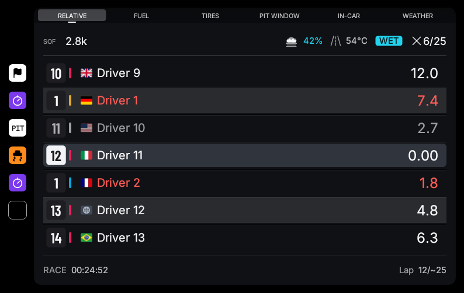
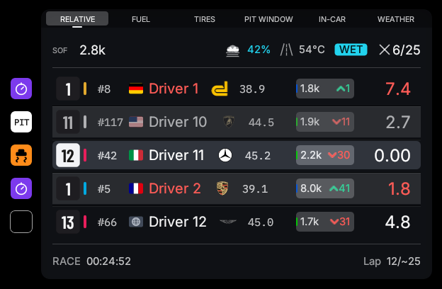

Who this panel is about
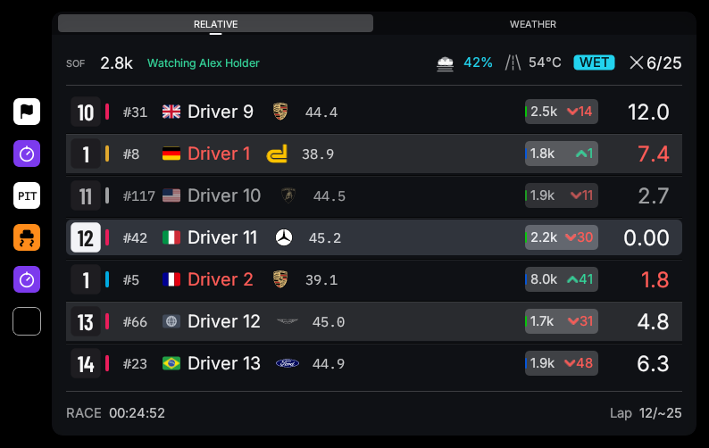
The status gutter
Outside the card on the left, one slot per row, so an annotation about a car never competes with the
driver's name for space. A slot shows, in priority order: a black-flag marker, the session's fastest-lap
stopwatch, a PIT block while that car is in its stall or approaching, or its off-track tally.
Rows with nothing to report draw nothing.
Black box
Six pages in the Relative's frame, walked with two wheel buttons. Every control is a real iRacing pit command, and every value shown is the sim's own echo of what is armed.
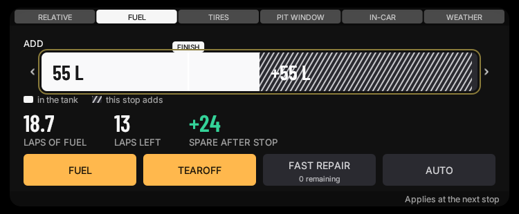
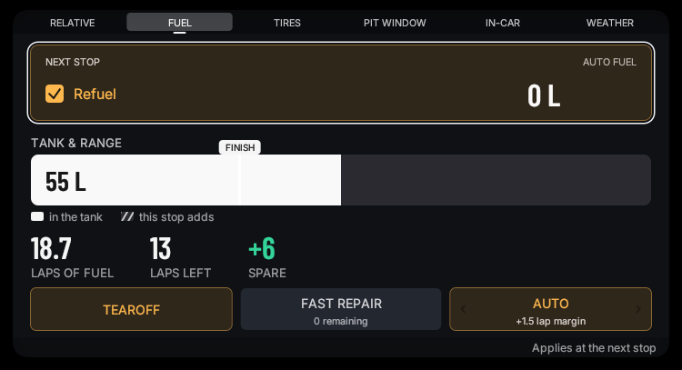
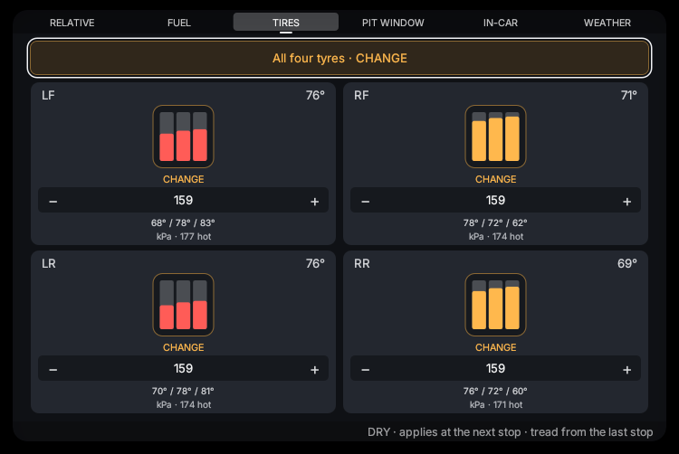
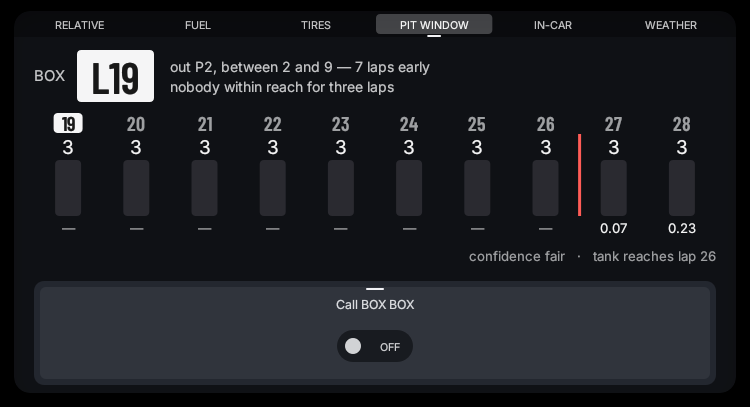
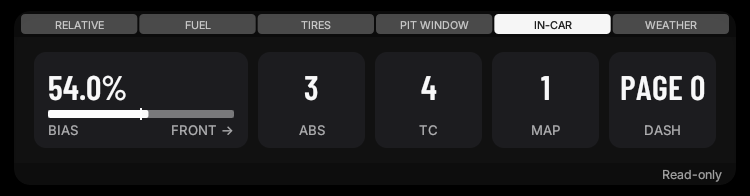
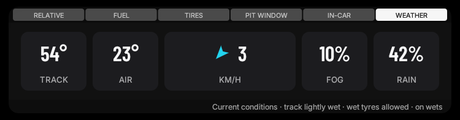
Pages appear only when they can say something true
The Pit Window page appears once the race is seen to need more than one stop. While spectating, the Fuel and Tires pages appear only when team sync is actually carrying the driver's data — an empty page that looks live is worse than no page.
Standings
The official classification, read class-relative: in a multi-class field every class is running its own race, and an overall number reads as a driver being fourteenth in a race they are leading.

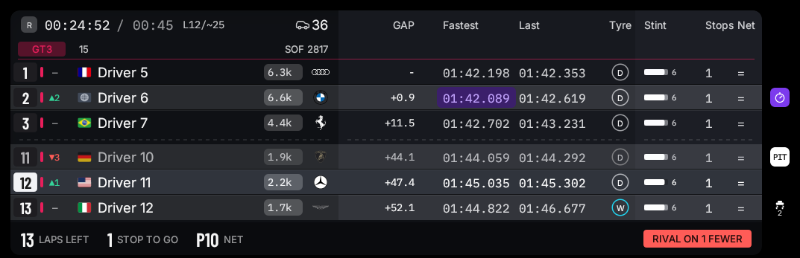


Radar bars
Two capsules framing your car, one per side, showing what is alongside. Colour encodes threat, not direction — once your own car is drawn on the bar, position already says which side a car is on.
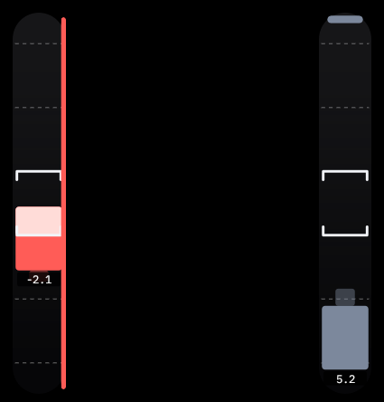
Faster class
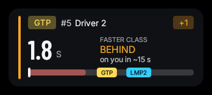
Status bordernew
The black box wears the session's state on its edge, so the one thing that matters right now is visible without reading a single row.
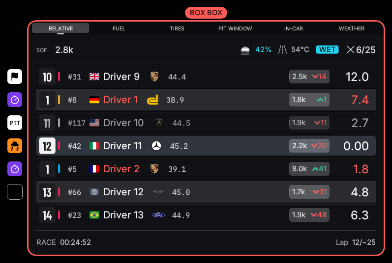
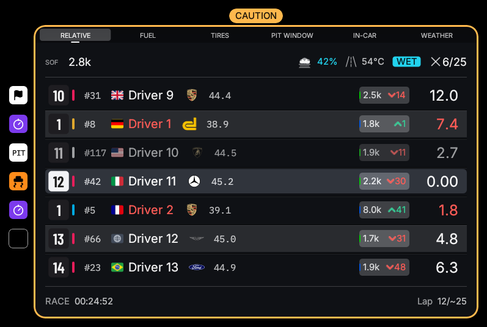
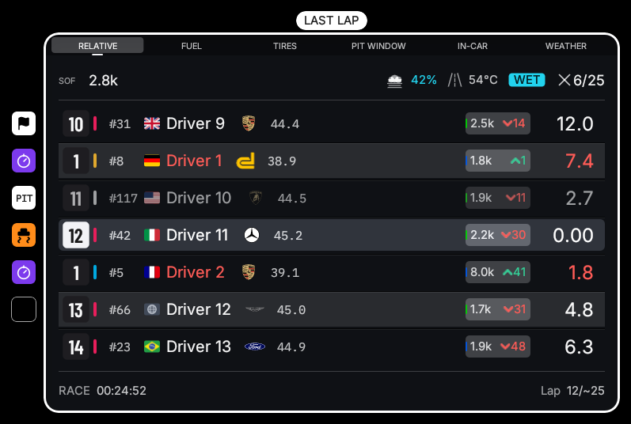
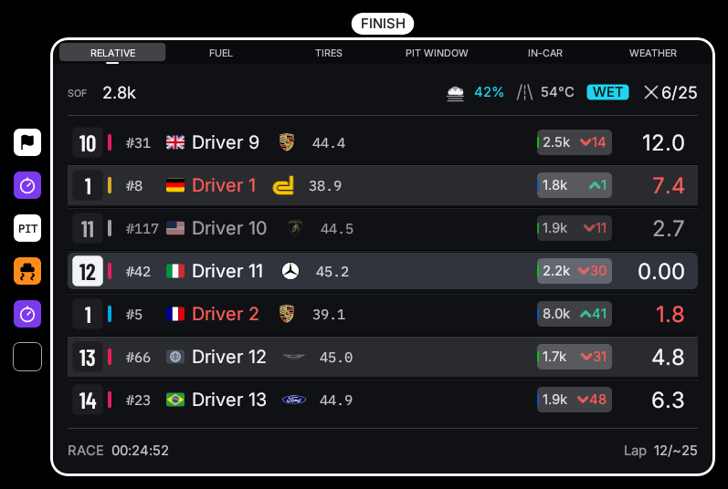
When BOX BOX fires
- By hand, from a toggle on the Pit Window page — a crew chief's call, or your own reminder.
- By fuel, once you could not safely complete another lap after this one, and only in the lap's back half, so the call is a settled "turn in at the end of this lap" rather than a first-corner guess. With no measured burn it never fires: a made-up "box now" is the one false instruction that costs a race.
It comes on steady and only pulses inside 400 m of the pit entry, so the flash means "turn in now". A hand-called BOX BOX clears itself once the car is on pit road.
Priority. Chequered > box call > white > yellow. A box call outranks the flags behind it because boxing under a yellow is exactly what you do.
Strategy & fuel
The projections a crew chief would otherwise be doing on paper, with every one of them labelled for how much it can be trusted.
The stop-skip suggestion
The note reading "save to 2.58 L/lap to skip a stop" is the Spa call surfaced: it searches for the smallest per-lap saving that removes a whole stop from the remaining race, and says so only when the saving is reachable. No measured burn, no known tank capacity, or a caution voiding the projection all leave it unsaid rather than guessed.
Known stop costs
Stops are costed from what has actually been observed — each car's own measured time stationary — rather than a single shared guess, so a car taking tyres every stop is projected with its real loss. Rivals' stop lengths are what the tyre inference is drawn from.
Team syncnew
In a team session every member's sim publishes the same world, but only the seated driver's sim publishes the car. Team sync shares the measurements, so a spectating crew chief sees the fuel, tyres and strategy of the car they are not sitting in — and a member who disconnects gets everything they missed.
How it works
- An event ledger, not state streaming. A closed lap is ~32 bytes every couple of minutes; a live scalars tick runs at 1 Hz and only while somebody is listening. A five-member team costs 1–2 KB/s in total.
- iRacing's own session clock stamps every event, so members merge them deterministically whatever the network delays. Accuracy comes from the timestamp, not from sending fast.
- Recovery is the ledger read back. A member who joins late or reconnects asks for what they are missing and replays it through the same handlers as live events — so a rebuilt overlay is identical to one that never dropped.
- Rooms are keyed by iRacing's SubSessionID, so members find each other with no configuration, and an invite code keeps strangers in the same subsession out.
Hostingnew
One member ticks Host the relay from this PC in Settings → Team Sync. The relay runs inside the overlay — no terminal, no second program — and binds to that machine only. Teammates reach it through the host's Tailscale Funnel, so only the host installs anything:
tailscale funnel 41230The address that prints goes in every teammate's Relay URL as wss://…, with the same
invite code. A host who leaves the invite field empty gets one generated and saved the moment hosting
starts; while hosting, that overlay connects to its own relay automatically and the URL field is greyed
out. Failures (a port already taken, an unreadable invite) are reported on the page rather than retried
silently.
What a crew chief sees
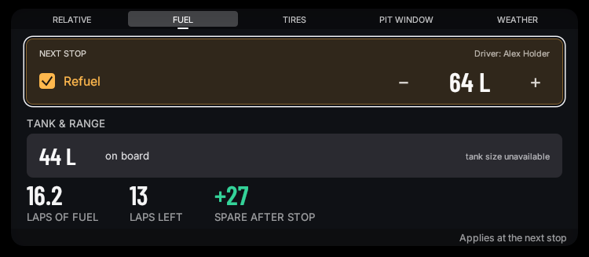
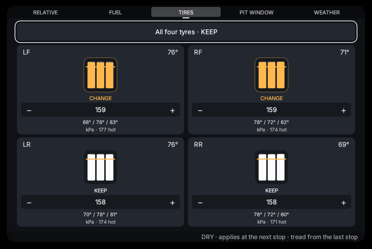
Nobody's pit box is touched without consent
- The driver arms Let my team adjust my pit box once per session. Off, remote requests are ignored.
- A change is announced, never prompted — a passive "set by <name>" note. A driver mid-corner cannot answer a dialog.
- Every change lands in the sim's own black box, where the driver can see and override it.
- A write applies once, live. A reconnecting driver replaying an hour-old ledger never has a stale command sprung on them — that property is covered by an end-to-end test.
Standing calls
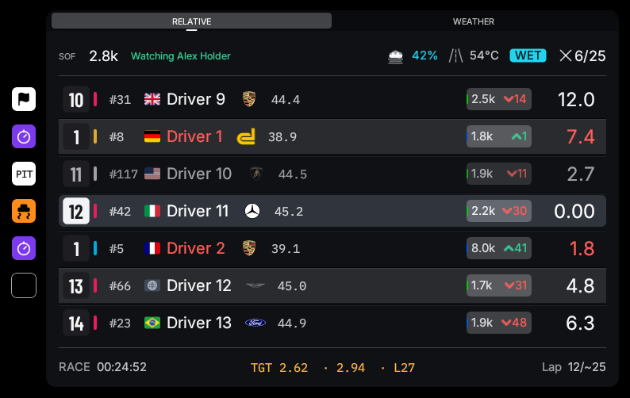
Shared fuel target
A crew chief sets a litres-per-lap target and it appears in the driver's Relative footer, with their current burn beside it and the lap the tank reaches at that rate — green at or under target, amber over. It is session state: it survives driver swaps and reaches a new driver who was a spectator when it was set, without anyone re-sending it.
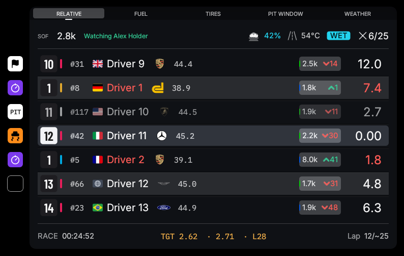
Standing tyre policynew
The answer to "do we take tyres at the next stop?", made durable. A press cycles it:
| Setting | What the driver's overlay does at each stop |
|---|---|
driver's call | Nothing — the directive is off. |
every stop | Arms all four. |
never | Clears all four — the double-stint call. |
wear under N% | Takes tyres only when the worst corner's remaining tread is at or under the threshold (default 80%, stepped by 5). With no wear measured yet it takes tyres: fresh rubber is the mistake that cannot lose a race. |
It is decided at the pit-road entry edge, once per entry, against the latest measured wear — so a policy set mid-stint still lands on the very next stop — and it goes through the same consent gate and "set by" note as any other crew write.
Danger driversnew
You see somebody drive badly and want the overlay to remember it — now and in every future session, so the moment they show up around you again the warning is already there.
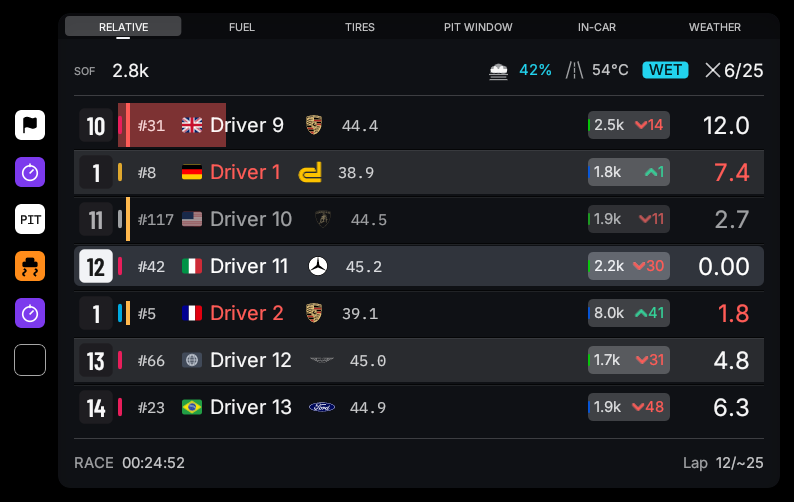
Right-click any row to mark that driver or clear the mark — the driver is marked where they are seen, with no list and no separate screen. Marks are keyed by iRacing customer id, which is the one identifier stable across sessions, and are written to the settings file straight away. A car whose entry publishes no customer id says so rather than offering a mark that would not survive the session.
Seat layouts
Where you want the panels while driving is not where you want them while watching.
Every panel keeps two positions: a driving layout and a watching one. The watching layout is used whenever you are not in the car — spectating, or sitting out while a team-mate drives — and it seeds itself from the driving layout the first time it is used, so the two only diverge once you actually drag something while watching. The General settings page names which one is in force, because a panel that "won't stay where I put it" after a seat change would otherwise read as a bug.
Stream modenew
Capture the overlay in OBS without capturing the whole screen.
The overlay normally hides itself from the taskbar and alt-tab, which also hides it from OBS's window picker. Stream mode (General settings) puts it back in both, so OBS lists Race Overlay as a Window Capture source — use the Windows 10 (1903 and up) capture method and layer it over your game capture. The taskbar button is the visible confirmation it took effect. It applies immediately, with no restart.
CPU behaviour
iRacing is sensitive to CPU starvation, and an overlay that glitches the sim is worse than no overlay.
- Background threads are marked for efficiency cores. Telemetry reading, the input reader and every sync socket thread run under EcoQoS, which asks Windows to schedule them off the cores the sim wants.
- The frame loop is paced, not spun. The overlay draws at its own interval and sleeps in between, rather than repainting every time the desktop mouse moves across it.
- Asset lookups are resolved once and remembered — manufacturer marks and icons used to cost tens of thousands of filesystem calls a second across a full field.
- Sync sends nothing nobody is listening to. The 1 Hz scalars tick is gated on somebody being in the room, and quantized so an unchanged value sends nothing at all.
Themes

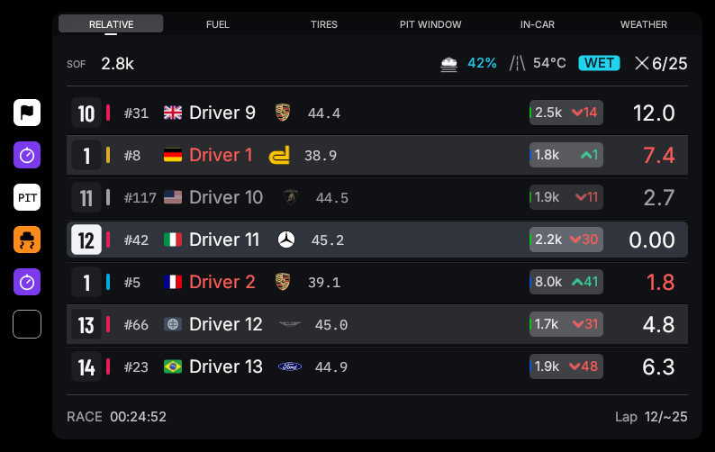
Settings window
Every knob in the settings file, without the file. Changes apply to the live panels as they are made — the panel behind the window is the preview — and are saved once they settle.
| Page | What is on it |
|---|---|
| General | Theme, hide-while-unfocused, hide-in-garage, off-track tally, driver flags, stream mode, which seat layout is in force, and Reset all positions. |
| Relative | Visibility, scale, card width, cars ahead/behind, and every optional column. |
| Standings | Visibility, scale, name-column width, other classes, stint laps, compound column, position change, endurance mode, pit-loss and tyre-change thresholds. |
| Logos | Manufacturer mark style and colour, with every known brand drawn as it will appear and a per-brand override. |
| Radar Bars | Car length, range in car lengths and in time, bar size, the gap between the two capsules, and gaps in metres. |
| Faster Class | Visibility, scale, warn/alert gaps and flash. |
| Black Box | Auto Fuel and its margin, and whether the tyre bars show temperatures or wear. |
| Team Syncnew | On/off, host the relay from this PC and its port, relay URL, invite code, and the pit-control consent. |
| Binds | One row per wheel action, with press-to-capture. A control already bound elsewhere is taken anyway and the clash shown on both rows. |
| Launcher | The programs to start with the overlay. |
Wheel binds
The black box is meant to be driven from the wheel at speed. Seven actions, bound to buttons or keys:
| Action | On a page | On the Relative |
|---|---|---|
| Next page / Previous page | Walk the tab rail | — |
| Next / Previous | Move the cursor down or up the page's rows | Scroll the field toward the cars behind or ahead |
| Increment / Decrement | Raise or lower the selected value | — |
| Toggle | Tick or untick the selected option | Recentre on the player |
Whatever is already held when a capture starts does not count, so a shifter resting in gear cannot be the
answer. Binds can also be set from a terminal with race-overlay.exe --bind <action>.
Command line
| Flag | What it does |
|---|---|
--demo | Render the fixed demo snapshot; iRacing is not needed. |
--demo-page=<page> | Open the black box on relative,
strategy, fuel, tires, in-car or weather. |
--demo-state=<a,b>new | Put the demo snapshot into a named state — a caution, a box call, a spectator's seat — for a screenshot. |
--screenshot=<path> | Write one rendered frame to a PNG and quit. The window stays hidden for the run. |
--sync-host=<port> | Run the team-sync relay from a terminal, printing the invite code and the funnel command. The settings page does the same thing without a terminal. |
--sync-join=<url,subsession,code,name,custid> | Join a relay and talk to it — a diagnostic for checking a link end to end. |
--bind <action> | Capture a wheel button for one action and save it. |
--list-devices | Every input device the overlay can see. |
--dump-vars / --dump-all-vars / --dump-session-info |
What the sim is actually publishing right now. The first thing to reach for when a value reads wrong. |